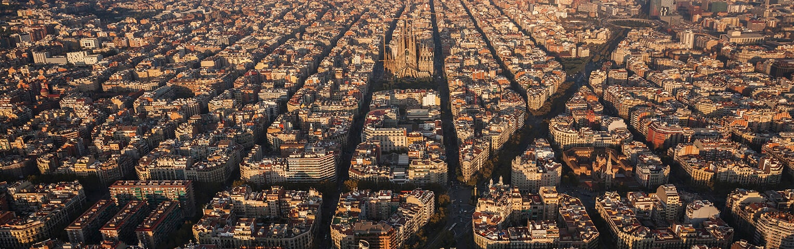

La historia de ciudad Barcelona
 Barcelona es una ciudad española, capital de la comunidad autónoma de Cataluña, de la comarca del Barcelonés y de la provincia homónima. Con una población de 1 636 762 habitantes en 2019 es la segunda ciudad más poblada de España después de Madrid, y la décima de la Unión Europea. El área metropolitana de Barcelona tiene 3 291 654 (2019) y el ámbito metropolitano de Barcelona, cuenta con 4 895 876 habitantes (2019), siendo así la quinta ciudad de mayor población de la Unión Europea.8Un paseo por la historia de Barcelona
En época neolítica ya hubo presencia humana en el territorio de Barcelona. A finales del siglo I aC se fundó como colonia romana con el nombre de Barcino. Contaba con unos mil habitantes y estaba rodeada por una muralla de defensa de la que aún se conservan restos en el casco antiguo.Durante más de 200 años, Barcelona estuvo bajo dominio musulmán, y con la reconquista cristiana se convirtió en condado del Imperio Carolingio y en residencia habitual de la Corona de Aragón. La fructífera época medieval convirtió a Barcelona en un centro económico y político del mediterráneo occidental. El Barrio Gótico de la ciudad supone el precioso testigo del esplendor que vivió Barcelona desde el siglo XIII hasta el XV.
A partir de entonces y hasta el XVIII, Barcelona vivió una cierta decadencia mientras luchaba por mantener su independencia económica y política. En1714, esta lucha culminaba con la caída de la ciudad en manos de las tropas Borbónicas. Ese año supone la pérdida de los derechos y privilegios de Cataluña y de los catalanes. A mediados del siglo XIX, con la llegada de la Revolución Industrial y el desarrollo sobre todo del sector textil, se inicia una etapa de recuperación cultural. Se trata de la Renaixença, un período en el que la lengua catalana se renueva como lengua literaria.El siglo XX inaugura también una importante transformación urbanística en la ciudad de Barcelona que culmina con su característico Barrio del Eixample, donde se ubican algunos de los edificios del modernismo catalán más distintivos de Barcelona. Uno de los arquitectos más destacados de este periodo fue el catalán Antoni Gaudí, autor de obras tan internacionalmente conocidas como la Casa Milà (o Pedrera), la Casa Batlló o el templo de la Sagrada Família. Las libertades conseguidas durante esta etapa fueron sustancialmente recortadas durante la Guerra Civil, en el año 1936, y la dictadura. Con el restablecimiento de la democracia, en el año 1978, Barcelona recuperó su fuerza sobre la economía y el catalán. La celebración de los Juegos Olímpicos en 1992 supuso la dinamización de todo su potencial de Barcelona y la reafirmación de su capitalidad. En el año 2004, la organización del Forum de las Culturas propició la recuperación de zonas industriales, que se convirtieron en Barrios residenciales. Un ejemplo de los renovados ánimos con los que la Barcelona mira el siglo XXI.